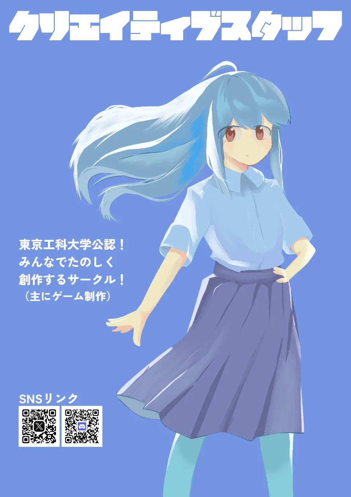
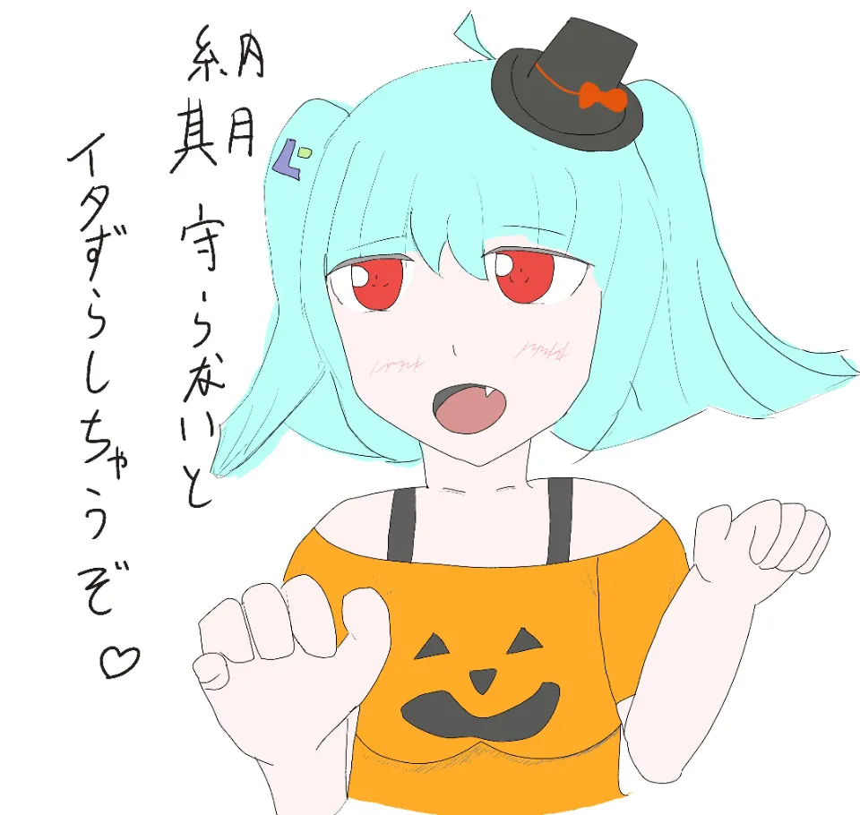
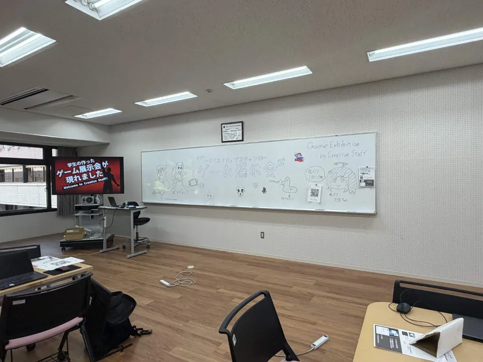
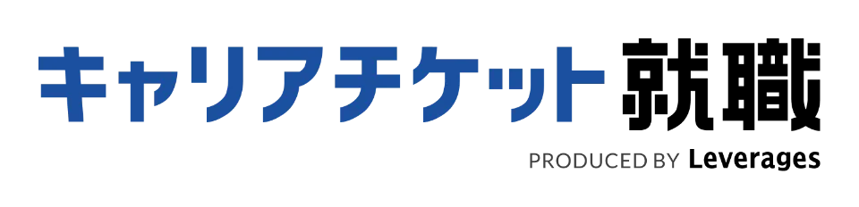

【東京工科大学公認サークル】チーム制作から自由な創作まで！「クリエイティブスタッフ」の魅力
2026年11月25日 / 執筆: tomo
クリエイティブスタッフとは？
クリエイティブスタッフは、ゲーム開発を中心としながら、イラスト・デザイン・音楽（DTM）・CG・プログラミングなど幅広い表現を扱う総合クリエイティブサークルです。
「仲間と力を合わせてゲームを作りたい」「自分の好きなイラストや音楽、映像を思いっきり表現したい」——そんな多様な創作意欲を持つ東京工科大学の学生が集まっています。
紅華祭（学祭）に向けたチームでのゲーム制作が活動の柱ですが、それだけではありません。それぞれの得意分野を活かした単体作品の制作や異分野コラボレーションなど、一人ひとりの「作りたい」を尊重する自由度の高い環境が魅力です。
活動内容
「チーム開発」と「個人・ジャンル別の創作」のどちらも充実しており、自分のペースや目的に合わせて参加できます！
- チームでのゲーム制作・ゲームジャム
サークルの主な活動は、プログラマー・グラフィッカー・サウンド担当が集まって行うゲーム開発です。例年、紅華祭での出展に向けて1~2ヶ月程度の制作期間を設けて制作しています。
1週間で集中して作る「ゲームジャム」への参加なども行っており、短期間での実践的なチーム開発も経験できます。
- イラスト・音楽・映像などの自由な作品制作
ゲーム制作の枠にとらわれず、オリジナル楽曲の制作、イラスト・キャラクターデザイン、3DCGや映像制作など、各メンバーが好きなジャンルで自由に作品を形にしています。
また、完成した作品は、サークルのイベントやDiscordでの発表・共有も行っています！
こんな感じ↓

初心者向け講習・技術交流
Unityでのゲーム開発から、イラストソフトやDTMツールの使い方まで、分野ごとのノウハウ共有や講習会を実施。未経験・初心者でも知識のある部員が丁寧に教えます！紅華祭（学際）などでの展示・試遊出展
チーム・個人で開発したゲームの試遊展示を行っています。また、来年はイラストや楽曲の展示も画策しており、日頃の成果を学内外の多くの人に届ける場を設けています。

- キャリアチケットカフェの利用
本サークルはレバレジーズグループの就職支援企業・キャリアチケット就職と協賛契約を結んでおります！
東京に２支店存在するキャリアチケットカフェを無料で利用できるほか、資金の提供や（まだ未定ですが）イベントの開催などにもご協力いただける予定です

こんな人におすすめ！
チーム開発で本格的なゲームを作ってみたい人：プログラム・絵・音などそれぞれの得意分野で協力し、一人では作れない作品に挑戦できます！
ゲーム制作に限らず、自分の作品を自由に作りたい人：イラストや音楽制作など、自分の得意分野や趣味をマイペースに伸ばせます！
いろいろなクリエイターと刺激し合いたい人：異なるジャンルの仲間と交流することで、新たなアイデアが見つかるかも！？
まとめ
「ゲーム開発をやりたい人」、「自分のイラストやCG、音楽をゲームにしたい人」だけでなく、「自分の好きな創作をし、共有して分かち合いたい人」も歓迎します！同じ熱量を持つ仲間と一緒に、大学生活でしかできないものづくりを始めてみませんか？